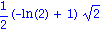
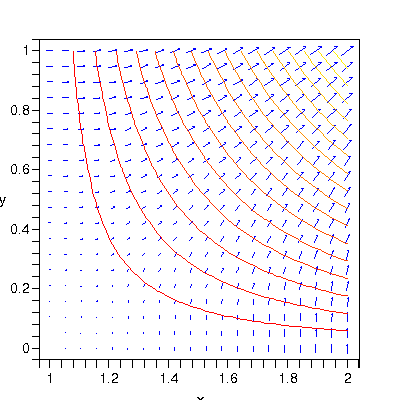
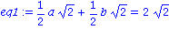
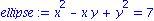
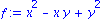
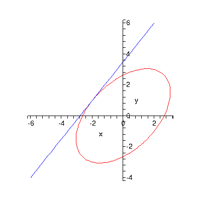
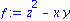
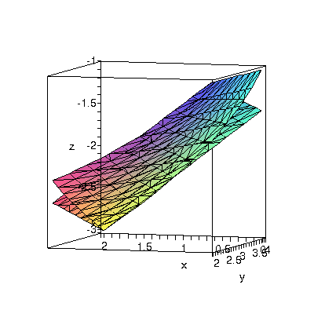

Gradients and directional derivatives
Gradients are defined in the VectorCalculus package.
| > |
restart; with(LinearAlgebra): with(VectorCalculus): with(plots): |
Warning, the names &x, CrossProduct and DotProduct have been rebound
Warning, the assigned names <,> and <|> now have a global binding
Warning, these protected names have been redefined and unprotected: *, +, ., D, Vector, diff, int, limit, series
Warning, the name changecoords has been redefined
The Gradient function takes gradients of expressions.
+y], [x*ln(x)]], [](images/Gradients_2.gif)
| > |
Gradient( sin(x*z)*cos(y+z), [x,y,z] ); |
The gradient is actually what is known as a vector field, meaning a vector whose components are functions of the space variables. (That's why the unit vectors above have a bar over them.) You can evaluate a field at a point to get a vector.
| > |
evalVF( Gradient(f,[x,y]), <2,1> ); |
With a gradient vector you can get the derivative at a point in any direction. Remember to take the dot product with a unit vector.

You can see the special relationship between gradients and level curves using gradplot as follows.
| > |
p1:= contourplot(f, x=1..2,y=0..1, contours=16):
p2:= gradplot(f, x=1..2,y=0..1, color=blue ): |
| > |
display({p1,p2},axes=boxed,scaling=constrained); |

Examples
Gradient as an unknown
Suppose that the directional derivative of a function f(x,y) at (2,-1) equals 2*sqrt(2) in the direction of i+j and -3 in the direction of -j. What is the maximum possible directional derivative of f at (2,-1)?
We set up the gradient as an unknown. Once this is found, the answer is simple.
Now for the data given in the problem:
| > |
eq1:= gradf . (<1,1>/sqrt(2)) = 2*sqrt(2); |

| > |
eq2:= gradf . (<0,-1>) = -3; |
We use these two pieces of information to find the unknowns.
| > |
s:= solve( {eq1,eq2}, {a,b} ); |
The answer to the problem is thus
| > |
Norm( subs(s,gradf), 2 ); |
Tangent line
Find an equation for the line tangent to the ellipse x^2 - x*y + y^2 = 7 at the point (-2,1).
| > |
ellipse:= x^2 - x*y + y^2 = 7; |

The ellipse is a level curve of the function

Hence the gradient of f is normal to the ellipse, and hence normal to all tangent lines for the ellipse.
| > |
n:= evalVF( Gradient(f,[x,y]), <-2,1> ); |
To get an equation for a line, we need a vector parallel to it, not normal to it. A simple trick (in the 2D case) is to reverse the components and flip the sign of one of them.
Check:

Hence v must be parallel to the line, which we can now express as
| > |
p1:=implicitplot(ellipse,x=-4..4,y=-4..4,color=red): |
| > |
p2:=plot([line[1],line[2],t=-1..1],color=blue): |
| > |
display({p1,p2},scaling=constrained); |

Tangent plane
Find the plane tangent to z^2 = x*y + 1 at the point (1,3,-2).
We define the given surface as a level surface of

Hence grad f is normal to the surface and to the tangent plane.
| > |
n:= evalVF( Gradient(f,[x,y,z]), <1,3,-2> ); |

The plane is therefore
| > |
plane:= n.( <x,y,z>-<1,3,-2> ) = 0; |
| > |
implicitplot3d( {f=1,plane}, x=0..2, y=2..4,z=-3..-1,axes=boxed ); |
